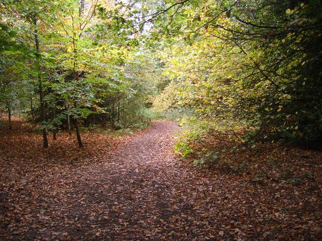

Georges Animal Farm Various Trails and Walks are available in and around Georges Animal Farm and are great for those who enjoy walks to really just relax and enjoy the scenary and atmosphere. Its not just the golden shades of the leaves that capture our attention in autumn, the landscapes we look after turn a rainbow of different colours which are a feast for the senses. Going for a walk among the amazing array of hues can even help us feel happier, healthier and calmer.
